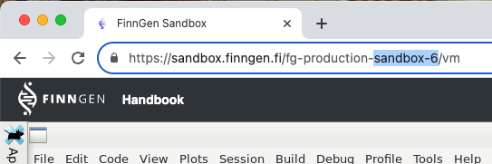

Tutorial using omop-cdm
tutorial_using_omop_cdm.RmdGetting configuration to connect to OMOP-CDM
Function fg_get_cdm_config provides all the information
needed to use one of the OMOP-CDM in FinnGen. You only need to specify
the sandbox number, and the dataFreeze you want to use.
- environment: You can find your sandbox number by looking at the url in your browser when connected to sandbox.

- dataFreezeNumber: At the time of writing dataFreeze can be 6, 7, 8, 9, 10, and 11, dataFreeze.
- cohortTableName: Tipycally, Hades tools need a table where to generate the cohorts. This is the name for that table. Notice that this table is created in a BQ schema that is shared with other users in your organisation. This table may be overwrite by others. We recomend that you include your name in the table.
config <- FinnGenUtilsR::fg_get_cdm_config(
environment = "sandbox-6",
dataFreezeNumber = 11,
cohortTableName = "javier_test_cohort_table"
)By default fg_get_cdm_config provides a list, but we can
also plot this in yalm format to evaluate it better
FinnGenUtilsR::fg_get_cdm_config(
environment = "sandbox-6",
dataFreezeNumber = 11,
cohortTableName = "javier_test_cohort_table",
asYaml = TRUE
) |> cat()
#> Set option sqlRenderTempEmulationSchema = 'fg-production-sandbox-6.sandbox'
#>
#> databaseName: FinnGen-DF11
#> connection:
#> connectionDetailsSettings:
#> dbms: bigquery
#> user: ""
#> password: ""
#> connectionString: jdbc:bigquery://https://www.googleapis.com/auth/bigquery:433;ProjectId=fg-production-sandbox-6;OAuthType=3;Timeout=10000;
#> pathToDriver: /home/ivm/.jdbc_drivers/bigquery
#> tempEmulationSchema: fg-production-sandbox-6.sandbox #needed for creating tmp table in BigQuery
#> useBigrqueryUpload: true # option for HadesExtras
#> cdm:
#> cdmDatabaseSchema: finngen-production-library.finngen_omop_r11
#> vocabularyDatabaseSchema: finngen-production-library.finngen_omop_r11
#> cohortTable:
#> cohortDatabaseSchema: fg-production-sandbox-6.sandbox
#> cohortTableName: javier_test_cohort_table
#> webAPIurl: https://ohdsi-webapi.app.finngen.fi/WebAPI/
#> Example using config to execute a Cohort Diagnostics analysis
Using this settings we can run an analysis similar to the example in Cohort Diagnostics package
Configuring the connection to the server
connectionDetails <- DatabaseConnector::createConnectionDetails(
dbms = config$connection$connectionDetailsSettings$dbms,
connectionString = config$connection$connectionDetailsSettings$connectionString,
user = config$connection$connectionDetailsSettings$user,
password = config$connection$connectionDetailsSettings$password,
pathToDriver = config$connection$connectionDetailsSettings$pathToDriver
)
# needed for creating tmp tables in BigQuery
options(sqlRenderTempEmulationSchema = config$connection$tempEmulationSchema)Loading cohort references from webapi
# Set up url
baseUrl <- config$webAPIurl
# list of cohort ids
cohortIds <- c(2241, 2240, 2239)
cohortDefinitionSet <- ROhdsiWebApi::exportCohortDefinitionSet(
baseUrl = baseUrl,
cohortIds = cohortIds,
generateStats = TRUE
)Generate cohorts
cohortTableNames <- CohortGenerator::getCohortTableNames(cohortTable = config$cohortTable$cohortTableName)
# Next create the tables on the database
CohortGenerator::createCohortTables(
connectionDetails = connectionDetails,
cohortTableNames = cohortTableNames,
cohortDatabaseSchema = config$cohortTable$cohortDatabaseSchema,
incremental = FALSE
)
#> Connecting using BigQuery driver
#> Creating cohort tables
#> - Created table atlas-development-270609.sandbox.javier_test_cohort_table
#> - Created table atlas-development-270609.sandbox.javier_test_cohort_table_inclusion
#> - Created table atlas-development-270609.sandbox.javier_test_cohort_table_inclusion_result
#> - Created table atlas-development-270609.sandbox.javier_test_cohort_table_inclusion_stats
#> - Created table atlas-development-270609.sandbox.javier_test_cohort_table_summary_stats
#> - Created table atlas-development-270609.sandbox.javier_test_cohort_table_censor_stats
#> Creating cohort tables took 33.22secs
# Generate the cohort set
CohortGenerator::generateCohortSet(
connectionDetails = connectionDetails,
cdmDatabaseSchema = config$cdm$cdmDatabaseSchema,
cohortDatabaseSchema = config$cohortTable$cohortDatabaseSchema,
cohortTableNames = cohortTableNames,
cohortDefinitionSet = cohortDefinitionSet,
incremental = FALSE
)
# cohort couts
CohortGenerator::getCohortCounts(
connectionDetails = connectionDetails,
cohortDatabaseSchema = config$cohortTable$cohortDatabaseSchema,
cohortTable = config$cohortTable$cohortTableName
)
#> Connecting using BigQuery driver
#> Counting cohorts took 2.71 secs
#> cohortId cohortEntries cohortSubjects
#> 1 2239 4198 4198
#> 2 2241 328 328
#> 3 2240 328 328execute cohort diagnostics
exportFolder <- "export"
CohortDiagnostics::executeDiagnostics(cohortDefinitionSet,
connectionDetails = connectionDetails,
cohortTable = config$cohortTable$cohortTableName,
cohortDatabaseSchema = config$cohortTable$cohortDatabaseSchema,
cdmDatabaseSchema = config$cdm$cdmDatabaseSchema,
exportFolder = exportFolder,
databaseId = "MyCdm",
minCellCount = 5
)